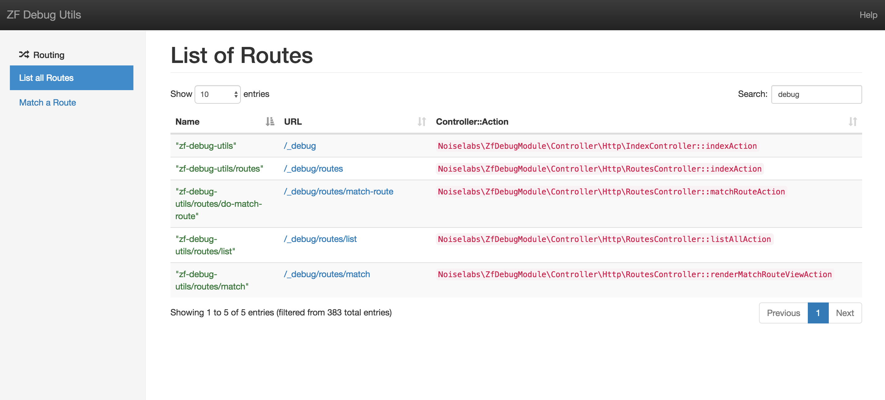

Debugging Zend Framework 2 routes and specifically why a given route wouldn't match to a controller was one of my pains while working with ZF2 applications.
After spending too much time debugging them I decided to put together a ZF2 module - Noiselabs\ZfDebugModule - to help me visualize what was going on. Another "scratch your own itch" kind of OSS project.
The project and Composer package is however, confusingly named
noiselabs/zf-debug-utils. You're welcome.
This project is available at github.com/noiselabs/zf-debug-utils and licensed under the MIT License.
Installation
Installation is a no-brainer through Composer:
composer require noiselabs/zf-debug-utils
The ZF2 module can then be enabled by adding it to your-zf-app/config/application.config.php.
<?php
'modules' => [
// other ZF modules
'Noiselabs\ZfDebugModule',
],
Configuration
ZfDebugModule is config-free™. Enjoy the silence. For now.
What's inside?
A WebUI and Console commands are provided to help you debug ZF2 routes. More tools can be added as new itches need to be scratched.
WebUI
Web URLs are by default mounted at /_debug. After installing this module simply navigate to /_debug and you should see the home screen. If you are using the ZendSkeletonApplication the home URL should look similar to http://127.0.0.1:8080/_debug.
Console
If you prefer to use the Console, type php public/index.php at the terminal to see a summary of the available commands.
Routing
Routing is the first debug component made available. You have the possibility to list all routes or match a URL to a route.
List all Routes
WebUI
Navigate to /_debug/routes/list or in the Home screen click in List all Routes. These are all the routes available in current application. Each column is sortable and you can filter results by using the search input.

Console
$ php index.php zfdebug routes list
Match a Route
WebUI
Navigate to /_debug/routes/match or in the Home screen click in Match a Route. Provide an HTTP method such as "GET" or "POST" plus a base URL (omit the scheme) and hit Find Route. If the URL matches a route in your application you should see something similar to the following picture. You can see details such as the route URL, controller and action.

Console
$ php index.php zfdebug routes match GET /_debug/routes/match
Export all routes in CSV format
Console
It is possible to have the output of the List all Routes feature saved into a CSV file. The generated file can then be loaded by spreadsheet applications and used in reports. Exciting!
Note that the export feature is at the moment only available via the Console.
$ php index.php zfdebug routes export

And that's all folks. Hope it can help you too. Less time debugging ZF routes means more time to debug ZF factories. Hooray.
Jokes aside, ZF2 is a great PHP Framework. Have fun with it[1].
[1] and profit if you can, profit is good too.